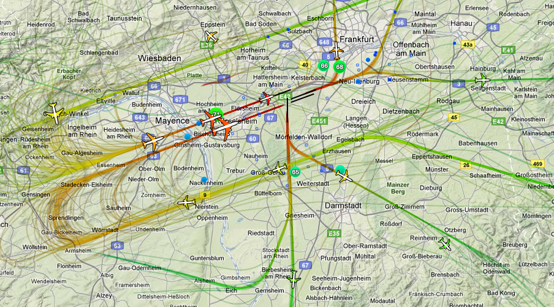
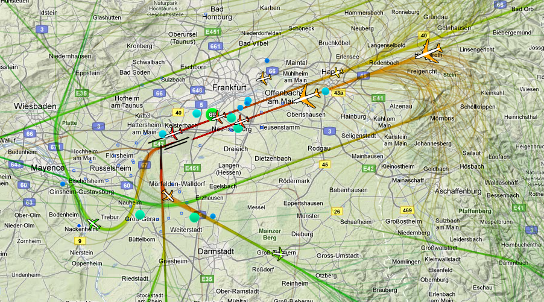

| (English) | (Deutsch) |
| Please notice:
We are now switching to the "850 style scenery -- although we know it is not 100% complete yet -- but the Taxi- and Runways look great already -- and all Major-Taxiways do have centerlines already (in the current GIT-version) As minimum you should use the FGFS-version 2.6: -- for versions prior 2.6 the centerlines are not clearly visible in daylight -- for version 2.6 you can add "FGdata/effects/lfeat.eff" to improve that -- starting with the current GIT-FGDATA this is already included (see item 3)! Do not forget step 2: Replacing the NAVDAT in order to have the correct ILS-Frequencies |
Bitte beachte:
Wir führen mit dieser Änderung den neuen 850-airport-layout ein -- obwohl wir wissen, dass er noch nicht ganz komplett ist -- aber die Taxi- und Landebahnen schauen schon sehr gut aus -- und alle Haupt-Taxiways haben bereits Landebahnen (in der neuesten GIT-Version) Du solltest hierzu mindestens die FGFS-Version 2.6 installiert haben -- für Versionen vor 2.6 sind die Mittellinien kaum sichtbar (außer bei Nacht!) -- für Version 2.6 kannst Du die neue Datei "FGdata/effects/lfeat.eff" einfügen -- ab der derzeitigen GIT-FGDATA Version is diese Datei bereits ausgetauscht (siehe Punkt 3)! Vergiss nicht den 2ten Punkt der Anleitung: Erneuere die NAVDAT für die ILS-Frequenzen! |
Attached you find the
EDDF-ELLX.zip, including 3 AddOn's:
|
Beigefügt findest
Du die EDDF-ELLX.zip mit 3 AddOn's:
|
| For a better understanding see
the attached 2 pictures showing todays real operations at EDDF: left: Wind from East right: Wind from West  |
Zum besseren Verständnis siehe
die folgenden 2 Bildchen des aktuellen, tatsächlichen Betriebes in
EDDF: links: Wind von Osten rechst: Wind vom Westen  |
| thanks
to: http://casper.umwelthaus.org/dfs/ |
|
Installation: |
|
| For the following you need to know where the directory $FG_ROOT is. Typically it is: | Für das Folgende musst Du
wissen, wo das Verzeichnis $FG_ROOT
ist. Typisch sind: |
|
Windows: c:\Programme\FlightGear\data Linux: /usr/local/share/FlightGear/data or: /usr/share/games/FlightGear Mac OS X: /Applications/FlightGear.app/Contents/Resources/data |
|
| Update Your „Shared
Models“ to the newest level. i.e. You have to download those
from http://scenemodels.flightgear.org/download/ → click onto → "A collection of shared models can be downloaded here." Then extract that TG and copy it into the directory $FG_ROOT/Models. (We suggest to do this update of the "Shared Models" regularly, because there will be new or changed models all the time!) |
Update Deine „Shared
Models“ zum neuesten Level. Downloade diese von http://scenemodels.flightgear.org/download/ klicke dort auf das "here" in → "A collection of shared models can be downloaded here." Extrahiere dieses TG und lade es in das Verzeichnis $FG_ROOT/Models. (Ein solcher Update der "Shared Models" sollte regelmäßig erfolgen, da ständig neue Modelle hinzukommen bzw. geändert werden!) |
| Unpack the "EDDF-ELLX.zip" in that you find the new
"EDDF-ELLX" - directory
move that into your "$FG_ROOT/Scenery"-directory "$FG_ROOT/Scenery"
and the"$FG_ROOT/Scenery/EDDF-ELLX"
Pick up the new Scenery as first entry, even before a possibly existing TerraSync-Dir! Delete or Insert this new directory to/from the list to activate or deactivate it. It should look like e.g.: |
Extrahiere die "EDDF-ELLX.zip" darin findest Du das neu
"EDDF-ELLX" - Verzeichnis
kopiere dieses in Dein "$FG_ROOT/Scenery"-Verzeichnis Danach hast Du (mindestens) 2 „Szeneries“: Das grundsätzlich vorhandene "$FG_ROOT/Scenery"
und das"$FG_ROOT/Scenery/EDDF-ELLX"
Setze das neue an die erste Position aller Sceneries – auch vor ein evtl. vorhandenes TerraSync-Verzeichnis! Entferne dieses Verzeichnis (oder fügen es hinzu) wenn Du es de-aktivieren bzw. aktivieren willst. Es sollte dann etwa so aussehen: |
| All ILS-Data must be
within the
FGFS-file "nav.dat.gz". To make it easy for you we made a copy of that
file and
integrated into that the new ILS-data. So now you only have to replace the existing "$FG_ROOT/Navaids/nav.dat.gz" with the "EDDF-ELLX/nav.dat.gz" from the EDDF-ELLX-package. You also may replace the existing "$FG_ROOT/Airports/apt.dat.gz" with the one in thsi package, to see all new taxiways. |
Die neuen ILS-Daten
müssen in
die FGFS Datei "nav.dat.gz" integriert werden. Der Einfachheit
halber haben wir eine Kopie dieser Datei erstellt und die ILS-Daten
hinzugefügt. Ersetze nun also die bestehende "$FG_ROOT/Navaids/nav.dat.gz" mit der in diesem EDDF-ELLX-Paket befindlichen "EDDF-ELLX/nav.dat.gz" Du solltest auch die existierende "$FG_ROOT/Airports/apt.dat.gz" mittels der hier verteilten ersetzen - um alle neuen TaxiWays zu sehen.! |
| To increase the
visibility of the taxiway centerlines for FGDATA-versions 2.6 and prior you may replace the "$FG_ROOT/effects/lfeat.eff": -- rename the existing file (e.g. to "lfeat.eff-org") -- copy the new one from this package into the "$FG_ROOT/effects/" |
Um die Centerlines
der neuen Taxiways zu verbessern, kannst Du für alle Versionen vor der
derzeitigen GIT (2.7) die bestehende "$FG_ROOT/effects/lfeat.eff"
austauschen: -- benenne die bestehende Datei um (z.B. in "lfeat.eff-org") -- kopiere die neue Datei aus dieser ZIP-Verteilung in das Verzeichnis "$FG_ROOT/effects/" |
| We hope you like it! | Wir hoffen Du hast viel Freude damit! |